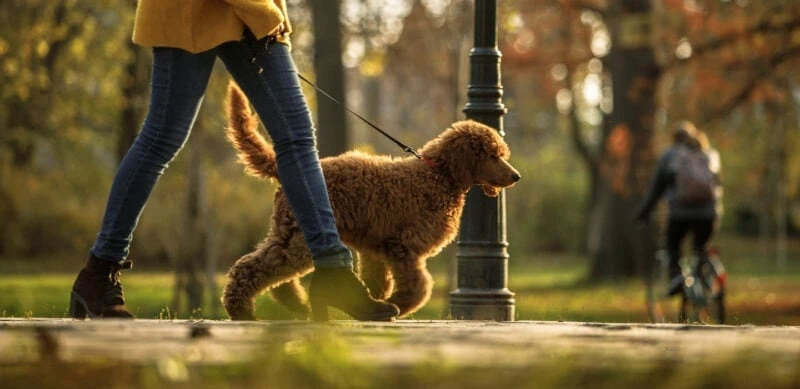
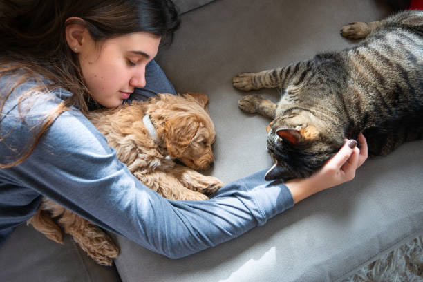
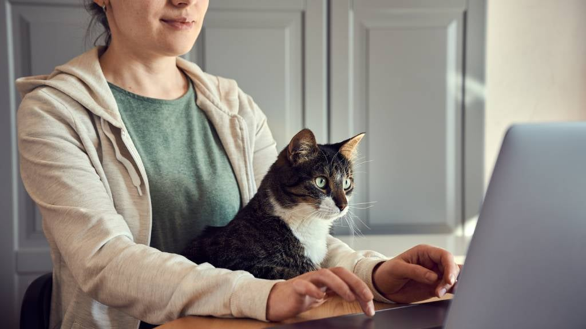

Our Services
Pet Sit
Need someone to shower your furry friend with love and attention while you're away for a few hours?
Our Pet Sit service connects you with a dedicated Pawtner who'll visit your pet at home. They'll engage in a variety of activities to keep your companion happy and healthy, including walks, playtime, feeding, and even taking them to the vet if needed. Think of it as having a trusted friend pop in to brighten your pet's day!
Pet Nanny
Going on an extended trip but worried about leaving your pet behind?
Our Pet Nanny service offers the perfect solution. A Pawtner will stay in your home, providing 24/7 care and companionship for your pet for a minimum of 3 days. This ensures your furry friend receives familiar surroundings and personalized attention while you're away. Remember to provide food and comfortable sleeping arrangements for your Pawtner during their stay.
Vet Sit
Can't pawsibly get to the vet? Let the vet "Vet Sit" you!
This 24/7 online service brings qualified vets straight to your furry friend's side (well, virtually speaking!). Whether you're short on time, facing an emergency, or simply prefer the convenience of home, our vets are here to address your concerns and offer expert advice. Skip the clinic hustle and Vet Sit your worries away with a purrfectly convenient consultation.